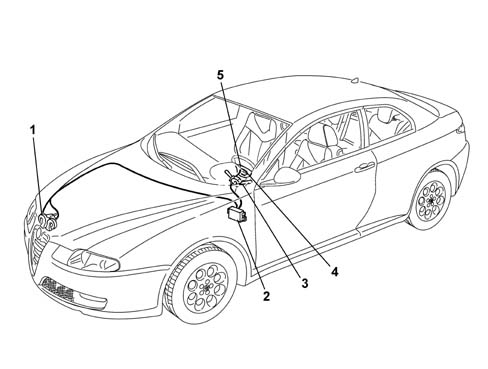
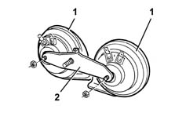
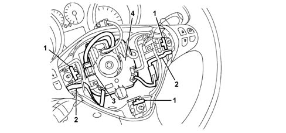
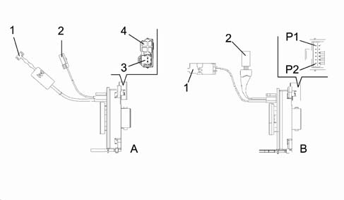

5550B HORNS
- Path
- Descriptions > 55 ELECTRICAL EQUIPMENT > 5550 WARNING AND MANOEUVRING INDICATORS > 5550B HORNS
- Kind
- system description
- Applies to
- all engines; all production periods
- Interactive page
- https://sloeber94.github.io/elrnDB-aGt/en/#/125000410
Applies to: all engines; all production periods
INTRODUCTION
The diagram below shows a view of the assembly.

1 - Horns
2 - Underdashboard junction unit (CPL)
3 - Steering column switch unit
4 - Clock spring
5 - Steering wheel cover
The two tone horn consists of a unit composed of two horns, fixed to a steel bracket, located in front right part of the vehicle, behind the headlamp.
The activation signal is given by pressing the centre section of the steering wheel by the spokes.
COMPOSITION
View of horn assembly

1 - Horns
2 - Mounting bracket
The two horns which make up the unit have different sounding tones, one has a high tone, the other a low tone.
The two horns are connected to the electrical system by means of single-pole contacts.
OPERATION
The pressure exerted on the centre of the steering wheel causes the compressino of one of the three springs, near the bolts fixing the Air Bag module (see Subassembly 5580C) which closes the circuit to earth.
View of horn control circuit

1 - Spring
2 - Printed circuit
3 - Horn connection
4 - Interconnection casing
The three springs form part of a printed circuit, in the partition housing the Air Bag module (see Subassembly 5580C) which ends with a two-way connection.
The connecting bridge for the horns comes out of the interconnection casing, at the base of the housing. The casing is, in turn, connected, via an eight-way connector, to the bridge which comes out of the clock spring.
The connection to the system, via the clock spring, allows the rotation of the steering wheel, ensuring the correct transmission of the various signals, without the aid of sliding contacts.
CLOCK SPRING
On versions without radio controls on the steering, on the side the clock spring is fixed to the steering column switch unit it has two connection points, one for the horn signal and one for the connection to the Air Bag module whilst on versions with radio/telephone and Selespeed controls on the steering wheel the connection is achieved via a single twelve-way connector.
View of connection points to electrical system:

A - Clock spring for versions without radio/Selespeed controls on the steering wheel
B - Clock spring for versions with radio/Selespeed controls on the steering wheel
1 - Connector connecting Air Bag module (steering wheel side)
2 - Connector connecting horns (steering wheel side)
3 - Connection point for connecting Air Bag module
4 - Connection point for connecting horns (steering column switch unit side)
P1 - Horn positive signal pin
P2 - Horn negative signal pin